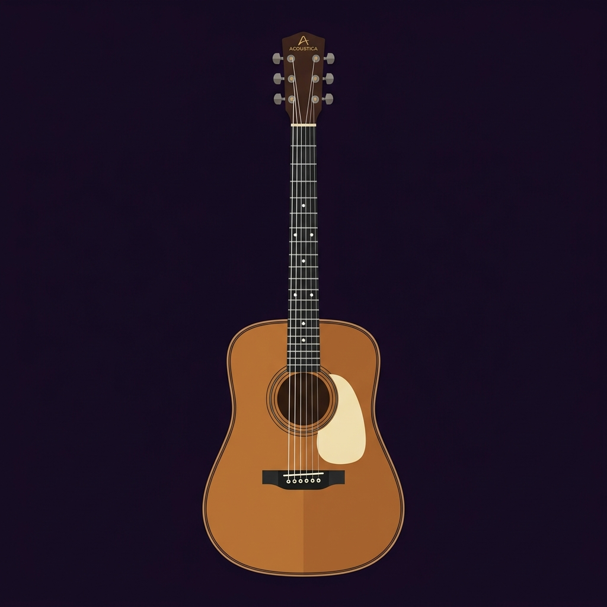
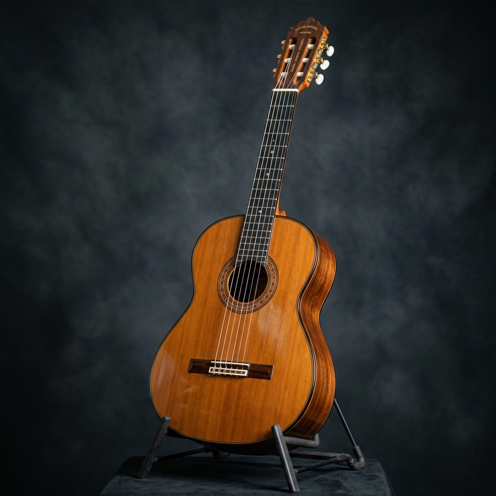
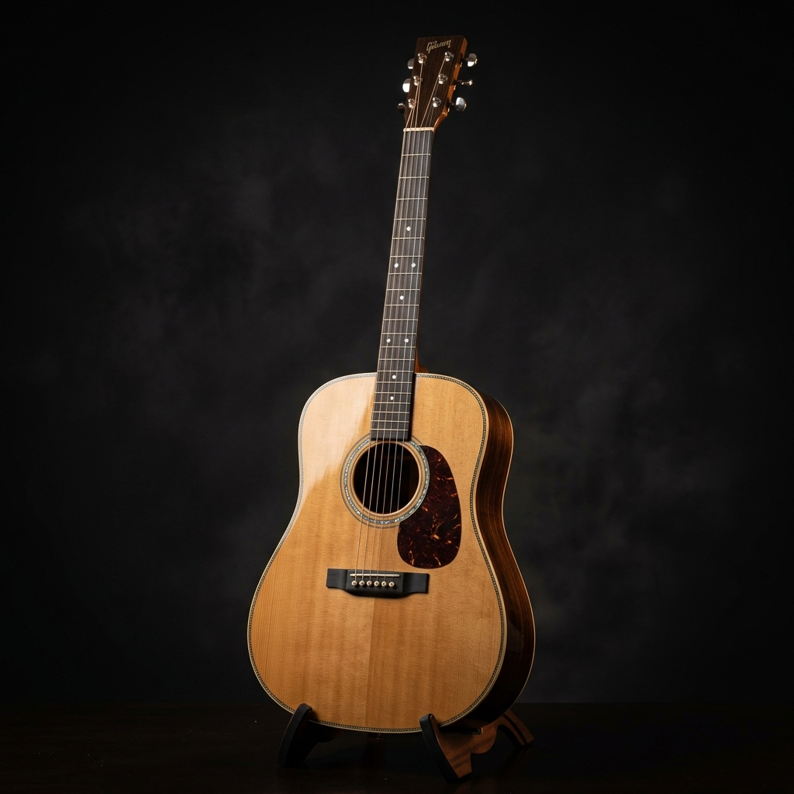
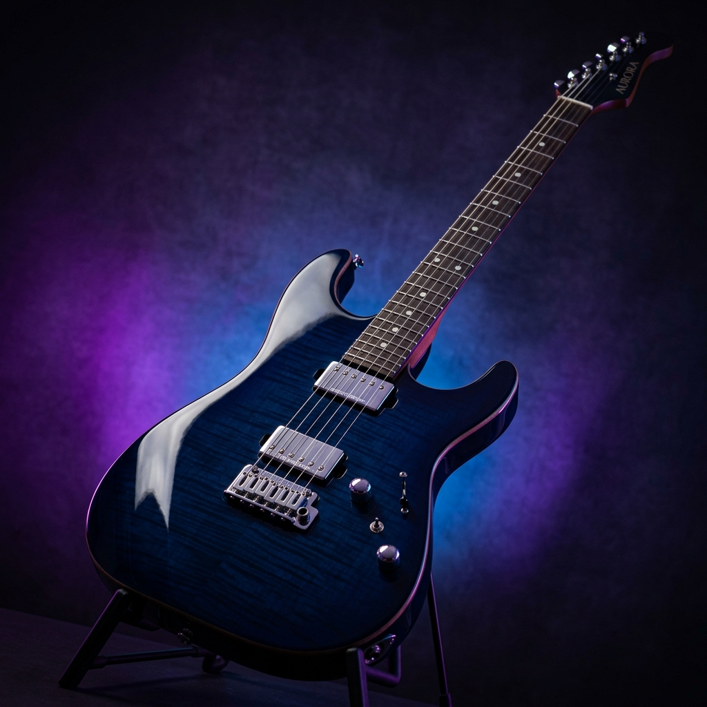
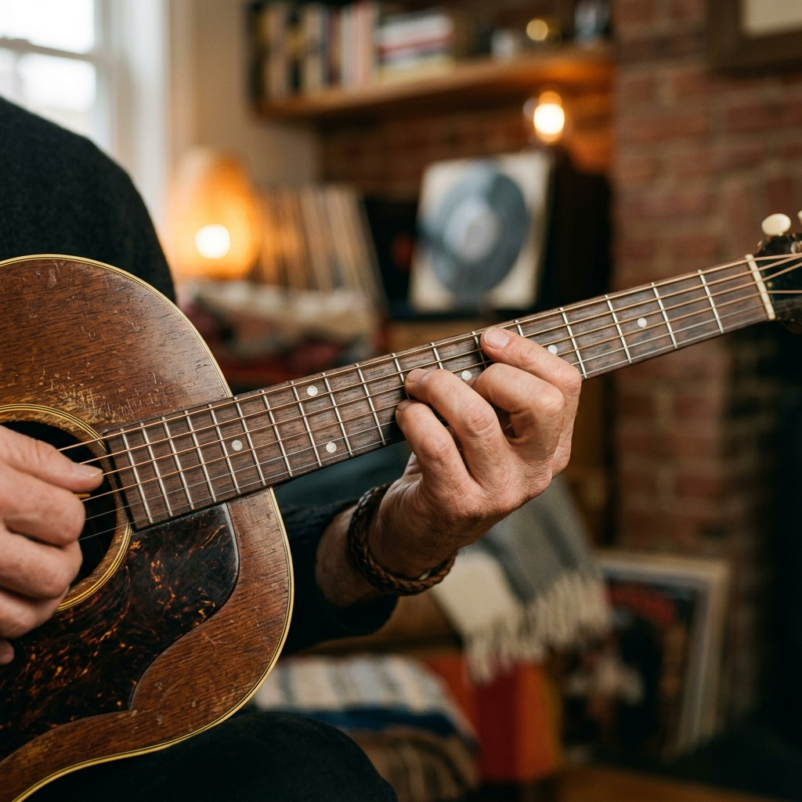

Cuerdas comunes en la guitarra estándar
Guía inicial para principiantes
Tu primera vuelta seria por el universo de la guitarra
Aprende las partes del instrumento, una historia breve, tipos de guitarra, cuidados básicos, primeros acordes y pequeños retos para empezar con criterio.
¿Qué hace especial a la guitarra?
Es melódica, armónica y rítmica al mismo tiempo. Puede acompañar canciones, hacer solos, crear ambientes y salvar reuniones familiares de conversaciones incómodas.
Mi
La
Re
Sol
Si
Mi
Afinación estándar de grave a agudo
Familias muy usadas: clásica, acústica y eléctrica
Mapa interactivo
Partes principales de la guitarra
Haz clic en cada punto. Sí, la guitarra tiene más partes que excusas para no practicar.

Selecciona una parte
La guitarra no muerde
Haz clic en un punto del diagrama para ver qué hace cada pieza.
Las cuerdas
De grave a agudo en afinación estándar: Mi, La, Re, Sol, Si, Mi. Estas seis notas son la base del instrumento.
Los trastes
Dividen el mástil en semitonos. Al presionar una cuerda contra un traste cambias la altura del sonido.
La caja o cuerpo
En guitarras acústicas y clásicas amplifica naturalmente el sonido. En eléctricas, el cuerpo sostiene pastillas y electrónica.
Historia express
De instrumentos antiguos a la guitarra moderna
Un recorrido corto para entender de dónde viene este aparato maravilloso que además ocupa medio cuarto.
Familias de instrumentos de cuerda
Mucho antes de la guitarra moderna ya existían instrumentos de cuerda pulsada como la lira, el laúd y otras variantes regionales.
Laúdes, vihuelas y guitarras tempranas
En Europa se desarrollaron instrumentos con caja, mástil y cuerdas que ayudaron a formar el camino hacia la guitarra española.
Se consolida la guitarra de seis cuerdas
La guitarra gana una forma más cercana a la actual, con seis cuerdas simples y repertorio propio.
La guitarra eléctrica cambia el juego
Con micrófonos o pastillas, amplificadores y nuevos estilos, la guitarra se vuelve protagonista del blues, jazz, rock, pop, metal y más.
Un instrumento global
Está en música clásica, folclórica, urbana, rock, jazz, worship, bandas sonoras, videojuegos y hasta en tutoriales de internet grabados con dudosa iluminación.
Familias principales
Tipos de guitarra
No todas sirven para lo mismo, aunque todas sirven para que alguien diga “yo también tocaba en el colegio”.

Guitarra clásica
Cuerdas de nylon, sonido cálido y suave. Ideal para iniciación, técnica clásica, música latinoamericana y acompañamiento tranquilo.
- Más amable con los dedos al inicio.
- Mástil más ancho.
- Se toca mucho con dedos.

Guitarra acústica
Cuerdas metálicas, sonido brillante y potente. Muy usada en pop, rock acústico, folk y cantautores.
- Más volumen natural.
- Puede doler más al principio.
- Perfecta para rasgueos.

Guitarra eléctrica
Usa pastillas y amplificador. Permite efectos, distorsión, solos, riffs y sonidos enormes sin tener que gritarle al universo.
- Cuerdas generalmente más suaves.
- Necesita amplificador o interfaz.
- Muy versátil para estilos modernos.
Ruta para empezar
Primeros pasos con la guitarra
Una mini ruta para que el comienzo no sea caos con cuerdas, dedos y frustración patrocinada.
Rutina de 10 minutos para principiantes
- 1 minuto: respirar, sentarse bien y revisar afinación.
- 2 minutos: tocar cuerdas al aire de la 6 a la 1 y de regreso.
- 3 minutos: presionar trastes 1-2-3-4 en una cuerda, lento y limpio.
- 2 minutos: practicar cambio entre dos acordes.
- 2 minutos: tocar una canción o patrón sencillo para cerrar con algo musical.
Conceptos clave
¿Qué son los acordes?
La base de la armonía y el acompañamiento en la guitarra.

La combinación del sonido
Un acorde se produce cuando tocas tres o más notas al mismo tiempo. Mientras que una melodía es una nota tras otra (como cuando cantas una línea), el acorde las une para crear un "colchón" armónico.
¿Para qué sirven en la guitarra?
Son el alma del acompañamiento. Cuando ves a alguien cantar y tocar la guitarra rítmicamente, está usando acordes para darle base, tono y estructura armónica a la voz.
Mayores y Menores: El color de la música
Los acordes cambian el estado emocional de una canción:
- Acordes Mayores: Transmiten sensaciones de alegría, brillo, estabilidad y energía.
- Acordes Menores: Suenan más nostálgicos, melancólicos, reflexivos o misteriosos.
¿Cómo se aprenden a tocar?
Para aprender a colocar los dedos en cada traste y practicar posiciones específicas, en Musicala tenemos aplicaciones dedicadas y entrenadores interactivos diseñados para ese paso de tu aprendizaje. ¡Esta guía te ayudará a comprender la teoría detrás de ellos!
Cuidado básico
Cómo cuidar tu guitarra
Porque comprar guitarra y tratarla como trapeador emocional no es una estrategia técnica.
🧼 Limpieza
Pasa un paño seco después de tocar. El sudor oxida cuerdas y ensucia el diapasón.
🌦️ Humedad
Evita sol directo, baños, carros calientes o lugares muy húmedos. La madera se mueve con el clima.
🎒 Transporte
Usa forro o estuche. Una caída pequeña puede torcer clavijas, mástil o puente.
🎵 Cuerdas
Cámbialas cuando suenen opacas, se sientan ásperas o se desafinen demasiado.
🔧 Ajuste
Si las cuerdas están demasiado altas o trastean mucho, puede necesitar calibración.
🧠 Hábito
Déjala visible y segura. Si la guardas en el olvido, sorpresa: practicarás menos.
Reto rápido
Quiz de guitarra para principiantes
Responde y revisa tu puntaje. La guitarra juzga en silencio, yo por lo menos te doy feedback.